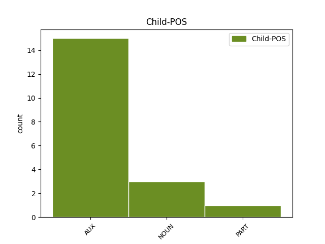

Distribution of features within this leaf

Agreement Rules sorted by frequency.
- When the dependent token is the conjunct(conj) of the head token, and the head token is VERB and the dependent token is AUX.
1 Ganet _ _ _ _ 0 _ _ _
2 e _ _ _ _ 0 _ _ _
3 voe voe VERB _ Mood=Ind|Number=Sing|Person=3|Tense=Past|VerbForm=Fin 0 _ _ _
4 d'an _ _ _ _ 0 _ _ _
5 29 _ _ _ _ 0 _ _ _
6 a _ _ _ _ 0 _ _ _
7 viz _ _ _ _ 0 _ _ _
8 Here _ _ _ _ 0 _ _ _
9 1878 _ _ _ _ 0 _ _ _
10 e _ _ _ _ 0 _ _ _
11 Bourdel _ _ _ _ 0 _ _ _
12 ha avere AUX _ Mood=Ind|Number=Sing|Person=3|Tense=Pres|VerbForm=Fin 3 conj _ _
13 mervel _ _ _ _ 0 _ _ _
14 a _ _ _ _ 0 _ _ _
15 reas _ _ _ _ 0 _ _ _
16 d'ar _ _ _ _ 0 _ _ _
17 4 _ _ _ _ 0 _ _ _
18 a _ _ _ _ 0 _ _ _
19 viz _ _ _ _ 0 _ _ _
20 C'hwrevrer _ _ _ _ 0 _ _ _
21 1949 _ _ _ _ 0 _ _ _
22 e _ _ _ _ 0 _ _ _
23 Kintin _ _ _ _ 0 _ _ _
24 . _ _ _ _ 0 _ _ _
1 Graet graet VERB _ Mood=Ind|Number=Sing|Person=3|Tense=Pres|VerbForm=Fin 0 _ _ _
2 e _ _ _ _ 0 _ _ _
3 vez vez NOUN _ Mood=Ind|Number=Sing|Person=3|Tense=Pres|VerbForm=Fin 1 conj _ _
4 deuzoutañ _ _ _ _ 0 _ _ _
5 « _ _ _ _ 0 _ _ _
6 o _ _ _ _ 0 _ _ _
7 mar _ _ _ _ 0 _ _ _
8 interior _ _ _ _ 0 _ _ _
9 » _ _ _ _ 0 _ _ _
10 ( _ _ _ _ 0 _ _ _
11 ar _ _ _ _ 0 _ _ _
12 mor _ _ _ _ 0 _ _ _
13 diabarzh _ _ _ _ 0 _ _ _
14 ) _ _ _ _ 0 _ _ _
15 . _ _ _ _ 0 _ _ _
Disagree Examples:
1 Goude goude VERB _ Mood=Ind|Number=Sing|Person=3|Tense=Pres|VerbForm=Fin 0 _ _ _
2 - _ _ _ _ 0 _ _ _
3 se _ _ _ _ 0 _ _ _
4 ez _ _ _ _ 0 _ _ _
5 eas _ _ _ _ 0 _ _ _
6 da _ _ _ _ 0 _ _ _
7 Vro _ _ _ _ 0 _ _ _
8 - _ _ _ _ 0 _ _ _
9 Sri _ _ _ _ 0 _ _ _
10 Lanka _ _ _ _ 0 _ _ _
11 ha _ _ _ _ 0 _ _ _
12 Bro _ _ _ _ 0 _ _ _
13 - _ _ _ _ 0 _ _ _
14 Japan _ _ _ _ 0 _ _ _
15 hag _ _ _ _ 0 _ _ _
16 e e AUX _ Number=Sing|Person=2 1 conj _ _
17 varvas _ _ _ _ 0 _ _ _
18 e _ _ _ _ 0 _ _ _
19 1552 _ _ _ _ 0 _ _ _
20 a _ _ _ _ 0 _ _ _
21 - _ _ _ _ 0 _ _ _
22 raok _ _ _ _ 0 _ _ _
23 mont _ _ _ _ 0 _ _ _
24 da _ _ _ _ 0 _ _ _
25 Vro _ _ _ _ 0 _ _ _
26 - _ _ _ _ 0 _ _ _
27 Sina _ _ _ _ 0 _ _ _
28 . _ _ _ _ 0 _ _ _
1 Ne _ _ _ _ 0 _ _ _
2 oa _ VERB _ Mood=Imp|Number=Sing|Person=2|VerbForm=Fin 0 _ _ _
3 ket _ _ _ _ 0 _ _ _
4 eus _ _ _ _ 0 _ _ _
5 Rodez _ _ _ _ 0 _ _ _
6 , _ _ _ _ 0 _ _ _
7 un _ _ _ _ 0 _ _ _
8 Hellen _ _ _ _ 0 _ _ _
9 a _ _ _ _ 0 _ _ _
10 Egipt _ _ _ _ 0 _ _ _
11 e e PART _ Mood=Ind|Number=Sing|Person=3|Polarity=Neg|VerbForm=Fin 2 conj _ _
12 oa _ _ _ _ 0 _ _ _
13 . _ _ _ _ 0 _ _ _
1 Goude _ VERB _ Mood=Ind|Number=Sing|Person=3|Tense=Pres|VerbForm=Fin 0 _ _ _
2 e _ _ _ _ 0 _ _ _
3 voe _ AUX _ Mood=Ind|Number=Sing|Person=1|Tense=Pres|VerbForm=Fin 1 conj _ _
4 barner _ _ _ _ 0 _ _ _
5 a _ _ _ _ 0 _ _ _
6 beoc’h _ _ _ _ 0 _ _ _
7 e _ _ _ _ 0 _ _ _
8 Daoulaz _ _ _ _ 0 _ _ _
9 . _ _ _ _ 0 _ _ _
1 En _ _ _ _ 0 _ _ _
2 em _ _ _ _ 0 _ _ _
3 astenn _ VERB _ Mood=Ind|Number=Sing|Person=1|Tense=Pres|VerbForm=Fin 0 _ _ _
4 a _ _ _ _ 0 _ _ _
5 rae _ _ _ _ 0 _ _ _
6 al _ _ _ _ 0 _ _ _
7 luskad _ _ _ _ 0 _ _ _
8 dispac'h _ _ _ _ 0 _ _ _
9 dre _ _ _ _ 0 _ _ _
10 Elzas _ _ _ _ 0 _ _ _
11 ha _ _ _ _ 0 _ _ _
12 Loren _ _ _ _ 0 _ _ _
13 ha haver AUX _ Mood=Ind|Number=Sing|Person=3|Tense=Pres|VerbForm=Fin 3 conj _ _
14 savet _ _ _ _ 0 _ _ _
15 e _ _ _ _ 0 _ _ _
16 voe _ _ _ _ 0 _ _ _
17 Soviedoù _ _ _ _ 0 _ _ _
18 damheñvel _ _ _ _ 0 _ _ _
19 all _ _ _ _ 0 _ _ _
20 e _ _ _ _ 0 _ _ _
21 Hagenau _ _ _ _ 0 _ _ _
22 , _ _ _ _ 0 _ _ _
23 Milhüse _ _ _ _ 0 _ _ _
24 ( _ _ _ _ 0 _ _ _
25 Mulhouse _ _ _ _ 0 _ _ _
26 ) _ _ _ _ 0 _ _ _
27 , _ _ _ _ 0 _ _ _
28 Schlettstadt _ _ _ _ 0 _ _ _
29 ( _ _ _ _ 0 _ _ _
30 Sélestat _ _ _ _ 0 _ _ _
31 ) _ _ _ _ 0 _ _ _
32 , _ _ _ _ 0 _ _ _
33 Kolmar _ _ _ _ 0 _ _ _
34 , _ _ _ _ 0 _ _ _
35 Metz _ _ _ _ 0 _ _ _
36 ha _ _ _ _ 0 _ _ _
37 kêrioù _ _ _ _ 0 _ _ _
38 all _ _ _ _ 0 _ _ _
39 . _ _ _ _ 0 _ _ _
1 E _ _ _ _ 0 _ _ _
2 miz _ _ _ _ 0 _ _ _
3 C'hwevrer _ _ _ _ 0 _ _ _
4 1993 _ _ _ _ 0 _ _ _
5 e _ _ _ _ 0 _ _ _
6 teuas teua VERB _ Mood=Ind|Number=Sing|Person=2|Tense=Imp|VerbForm=Fin 0 _ _ _
7 Dihun _ _ _ _ 0 _ _ _
8 Penn _ _ _ _ 0 _ _ _
9 - _ _ _ _ 0 _ _ _
10 ar _ _ _ _ 0 _ _ _
11 - _ _ _ _ 0 _ _ _
12 Bed _ _ _ _ 0 _ _ _
13 da _ _ _ _ 0 _ _ _
14 vezañ _ _ _ _ 0 _ _ _
15 ur _ _ _ _ 0 _ _ _
16 gevredigezh _ _ _ _ 0 _ _ _
17 kerent _ _ _ _ 0 _ _ _
18 hag _ _ _ _ 0 _ _ _
19 e _ _ _ _ 0 _ _ _
20 miz _ _ _ _ 0 _ _ _
21 Mezheven _ _ _ _ 0 _ _ _
22 1993 _ _ _ _ 0 _ _ _
23 e _ _ _ _ 0 _ _ _
24 voe _ AUX _ Gender=Masc|Number=Sing|Person=3|Tense=Past 6 conj _ _
25 krouet _ _ _ _ 0 _ _ _
26 Dihun _ _ _ _ 0 _ _ _
27 - _ _ _ _ 0 _ _ _
28 Breizh _ _ _ _ 0 _ _ _
29 . _ _ _ _ 0 _ _ _